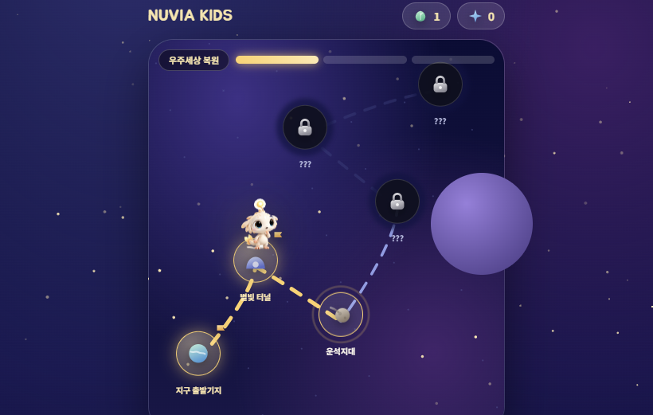
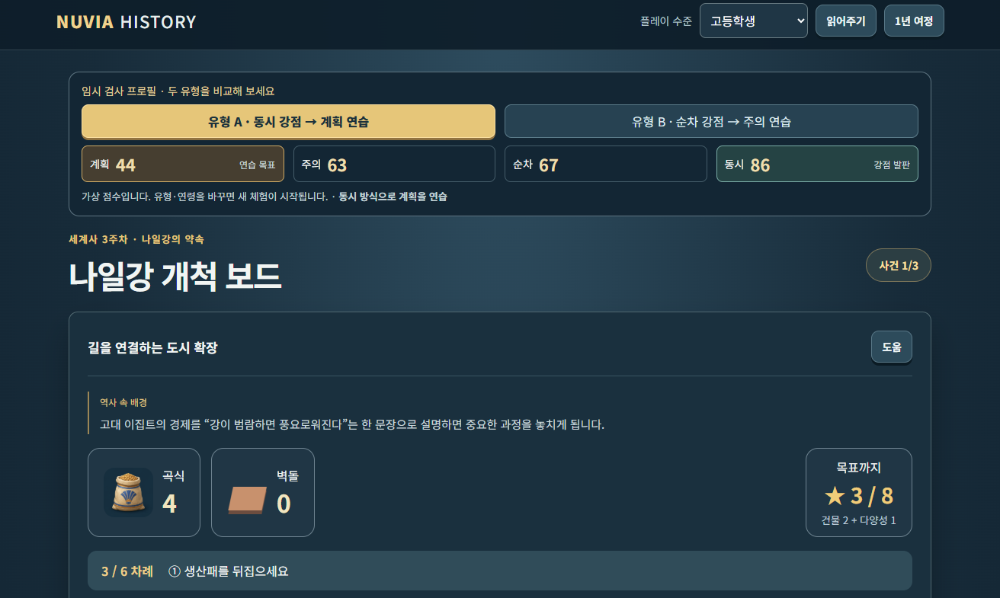
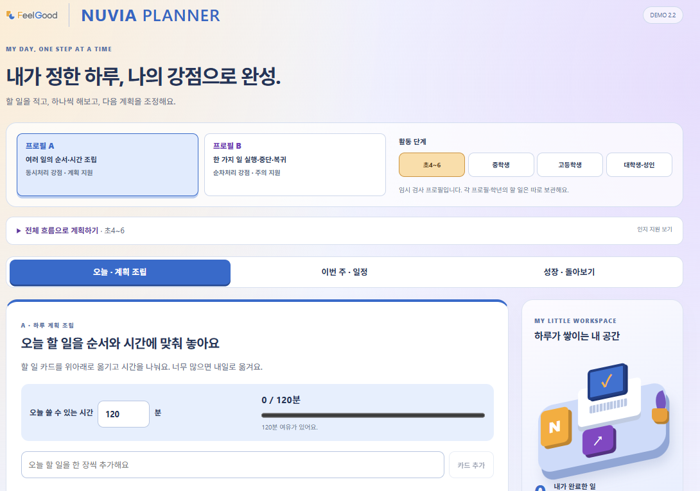
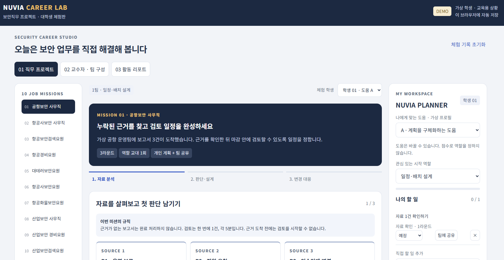

뇌 과학 기반 · 첨단 맞춤 교육 실현 시스템
K-PASS / D-CAS 인지진단으로 학생 개개인의 두뇌 유형을 분석하고,
데이터 기반 개인 맞춤 교육으로 진정한 성장을 만들어 냅니다.
학교 제안 요약
기존 창체·인성교육을 데이터 기반 개인 맞춤 시스템으로 업그레이드합니다. 정규수업 없이 의무시수만으로 운영 가능합니다.
진정한 글로벌 교육의 탁월함은
학생 개인의 인지적 특성을 이해하는 것에서 시작됩니다.
K-PASS / D-CAS는 비언어 중심, 정답이 존재하는 문제평가로 정확한 뇌 기능을 평가합니다. 교사의 업무 부담을 줄이는 동시에 진정한 학생 중심 학습 환경을 구현합니다.
과학적 진단 기반
K-PASS/D-CAS 검사로 81가지 두뇌 특성 분류. 게임형 인지과학 검사, 40년 축적 데이터 기반 높은 신뢰도.
정규수업 Zero 침범
창체·인성교육 의무시수 및 방과후 활용 가능. 교과 교사 업무 추가 없음, 담임 진행 가능.
AI 자동화 리포트
인성교육 실적보고서, 학생 성장 리포트, 생기부 참고 서술 자동 생성. 교사 행정 업무 절감.
측정 가능한 성장
연 2회 재진단으로 정서지능·인지성장 변화를 수치로 증명. 학교 평가 자료로 활용 가능.
다문화·글로벌 적합
비언어 중심 검사로 다문화·다언어 환경 최적화. 국제학교·사립학교 모두 적용 가능.
보편 가치 기반
동서양 철학·윤리 원리 기반 공통 가치교육. 특정 종교 편향 없는 균형 잡힌 인성교육.
SCHOOL DASHBOARD · CASE STUDY
검사에서 끝나지 않습니다.학급 전체의 인지 특성을 교사가 한눈에 확인할 수 있습니다.
K-PASS 검사 결과를 학급 단위로 통합하여 학생들의 인지 특성, 강점과 지원 필요 영역, PASS 영역별 분포를 교사가 수업과 학생 지원에 활용할 수 있는 정보로 확장합니다.
SCHOOL DASHBOARD · CASE STUDY
한국교원대 × 증평군 × FeelGood
학급 인지능력 분석 대시보드
학생 개인의 검사 결과를 넘어 학급 전체의 PASS 인지 특성과 지원 필요 영역을 시각적으로 확인하는 교사용 분석 대시보드 예시입니다.
교사 대시보드 예시 보기 →학교 진입 경로
인성교육 의무시수
창의적 체험활동 연 204시간
방과후학교
선택형 프로그램 운영
조례·종례 루틴
매일 10분 MindCompass
학생 성장 데이터
학기별 리포트 자동 생성
도입 패키지
| 패키지 | 포함 내용 | 가격 |
|---|---|---|
| 검사만 | K-PASS / D-CAS 검사 진행 (결과 리포트 포함) | 75,000원 / 인 |
| 검사 + 프로그램 제작 | 검사 진행 + 학교 맞춤 AI 프로그램 설계 제작 + 플랫폼 이용 | 10,000원 / 인 + 프로그램 사용료 |
| 검사 + 예시 프로그램 | 검사 진행 + 기존 예시 프로그램 그대로 운영 | 10,000원 / 인 + 4,000원 / 명 (전교 인원 기준) |
· 학교 전체 인원수에 따라 금액 협의 가능합니다.
· 프로그램 사용료는 도입 기능·커스터마이징 범위에 따라 별도 안내드립니다.
검사 소개
한국 최고 전문가의 40년간 축적된 분석 데이터 기반, 세계 최초 게임형 두뇌 잠재력 평가 시스템.
아동 학습·적성
지능검사
한국 최초 게임형 두뇌 잠재력 평가. P·A·S·S 4축 기반 인지처리 경로 직접 분석, 두뇌 발달 패턴 정량화.
청소년·성인
진로·직무 검사
두뇌유형 분석 / 인지적 능력 / 직무적성 리스트. 기업 HR·군·경·보안 기관까지 활용 가능한 뇌 기반 진로·적성 검사.
PASS 4축 인지 평가
소개 영상
K-PASS · D-CAS 인지 프로파일링 시스템을 영상으로 한눈에 확인하세요.
방송 & 시연 영상
K-PASS 언론 영상 — SBS Biz 〈트렌드스페셜〉
SBS Biz 트렌드스페셜에 소개된 K-PASS 두뇌 잠재력 평가 시스템 방송 편집본입니다.
YouTube에서 보기 →직접 체험해 보십시오
휴대폰 카메라로 QR을 촬영하면 실제 검사 화면과 결과지를 바로 확인할 수 있습니다.


검사 프로세스
다운로드
PC / 태블릿
Windows · iOS
검사 진행
30~50분 소요
게임형 진행
결과 확인
검사 완료 즉시
자동 리포트
검사 도입 & 활동 실적
K-PASS · D-CAS 기반 인지검사를 전국 대학, 청년기관, 초등학교, 해외 기관에 성공적으로 도입한 실제 현장 기록입니다.


검사에서 시작해
매일의 성장으로 이어지는 NUVIA
K-PASS·D-CAS로 발견한 인지특성을 KIDS의 반복 훈련, HISTORY의 사고 적용, CAREER LAB의 진로·직무 체험, PLANNER의 생활 실행으로 연결합니다. MY NUVIA는 그 변화가 실제로 일어났는지를 기록으로 확인합니다.
K-PASS · D-CAS
현재 인지특성과 강점·지원영역을 확인합니다.
인지훈련 · 사고력 · 진로직무
인지훈련과 사고력 활동, 진로·직무 체험을 PLANNER 실천으로 연결합니다.
변화의 기록
수행 변화와 전략 사용, 독립적 적용을 확인합니다.
인지훈련의 성과를 다른 과제에서도 확인해야 합니다
연습한 과제의 향상과 다른 과제·일상에서의 활용은 구분해 확인해야 합니다. NUVIA는 전략을 적용할 맥락과 수행 기록을 함께 설계합니다.
연습한 과제의 수행 향상
인지훈련 리뷰에서는 연습한 과제의 수행이 향상된다는 근거가 풍부했습니다. 훈련 안의 변화는 확인해야 할 첫 단계입니다.
다른 과제 · 일상 적용 확인
같은 리뷰에서 가까운 과제로의 전이는 근거가 더 적었고, 먼 과제나 일상 인지수행 개선의 근거는 제한적이었습니다.
NUVIA의 후속 경험 설계
HISTORY·CAREER LAB에서 전략을 다시 사용하고, PLANNER에서 실제 행동으로 실행하도록 설계합니다. 이 연결의 효과는 별도로 검증합니다.
필굿이 설계한 전이의 다리
HISTORY와 CAREER LAB에서 사고전략을 적용하고, PLANNER에서 실제 행동으로 실행하며, MY NUVIA에서 전략 사용과 독립적 수행의 변화를 확인합니다.
전이 가능성을 확인하기 위한 설계입니다. 효과는 시범 운영과 후속 과제에서 별도로 검증합니다.
NUVIA 시리즈의 역할과 연결
연령과 목적에 필요한 프로그램을 선택하고, 캠프는 PLANNER와 우선 연결합니다.
| 프로그램 | 핵심 경험 | 주요 대상 · 목적 |
|---|---|---|
| KIDS | 게임으로 기초 인지과정 연습 | 유아 · 초등 중심 |
| HISTORY | 역사 자료로 근거를 비교하고 판단 | 연령별 사고력 활동 |
| PLANNER | 계획을 세우고 실행 · 회고 | 초4부터 대학생 · 성인 |
| CAREER LAB | 인지특성을 반영한 진로 · 직무 프로젝트 | 중고생 진로 / 대학생 학과별 직무 |
| MY NUVIA | 수행 기록과 다음 지원 확인 | 본인과 권한을 가진 지원자 |
대학 캠프의 기본 구성은 D-CAS + CAREER LAB + PLANNER입니다. HISTORY는 선택 연계합니다.
개인맞춤 인지훈련
하루 약 10분의 게임형 활동으로 계획·주의·동시처리·순차처리를 연습합니다.

400개 훈련 라이브러리 기반 설계. 실제 콘텐츠와 연령별 운영 범위는 도입 시 확인합니다.
역사기반 사고력 훈련
세계사의 이야기와 자료 속에서 선택하고, 근거를 살펴보고, 판단을 다듬습니다.

| 대상 | 자료 | 사고 활동 |
|---|---|---|
| 미취학 5~7세 | 짧은 장면 · 그림 · 음성 | 탐험 · 조립 · 선택 결과 비교 |
| 초1~5 / 초6~중3 | 문장 · 단서 / 여러 자료 · 관점 | 역할 · 순서 · 계획 / 대안 · 근거 연결 |
| 고1~3 / 대학 · 성인 | 상충 자료 / 인문학 · 조직 사례 | 대안 가설 · 논증 / 판단 기준 적용 |
세계사 우선 구축, 한국사 2차 확장. 화면에 표시된 프로파일은 체험용 가상 점수입니다.
메타인지 기반 자기관리
초4부터 성인까지, 나의 실행 패턴을 발견하고 전략을 실제 생활에 적용합니다.

| 영역 | 일상의 실행 전략 |
|---|---|
| PLAN · 계획 | 우선순위 선택 · 과제 분해 |
| START · 착수 | 아주 작은 첫 행동 |
| FOCUS · 집중 | 집중 구간 · 방해요인 조절 |
| TIME · 시간 | 예상 · 실제 비교 · 여유시간 |
| RECOVER · 회복 | Reset · 다음 가능한 행동 |
| CHECK · 점검 | 패턴 발견 · 전략 조정 |
캠프 과제도 개인 할 일로 연결합니다. 스스로 계획하고 실행하는 힘을 기르도록 설계합니다. 화면의 A·B 프로필은 체험용 예시입니다.
HISTORY와 PLANNER는 전략으로 연결됩니다
사고 활동에서 사용한 방법을 실제 생활에 연결하는 설계 예시입니다. 두 제품의 점수 · 레벨은 합치지 않습니다 — 연결 대상은 전략과 도움 방식, 실제 적용 맥락입니다.
인지특성에 맞춘 진로 · 직무 캠프
학생이 정보를 이해하고, 판단하고, 행동하는 방식까지 수업에 반영합니다. 검사 결과가 활동 방식으로, 체험 기록이 다음 실천으로 이어집니다.
관심 분야를 직접 경험하며 나에게 맞는 탐색 방법을 찾습니다
관심 지도 · 분야 비교 · 다음 탐색 계획
학과와 연결된 업무 과제를 수행하며 나의 강점과 필요한 지원을 확인합니다
직무 산출물 · 수행 근거 · 포트폴리오
DEMO · 학과별 직무 체험과 개인 PLANNER 화면
직무 선택부터 자료 분석, 역할 교대와 개인 할 일을 한 화면에서 안내하는 체험판입니다. (항공보안학과 · 보안직무 프로젝트 예시)

기존 진로 · 직무 수업에 더하는 가치
직업 정보와 체험 경험에 인지맞춤 지원과 후속 실행을 결합합니다. 좌측은 비교를 위한 운영 유형이며, 경쟁사 전수조사 결과는 아닙니다.
| 비교 항목 | 설명 · 공통 체험 중심 운영 | NUVIA CAREER LAB 설계 |
|---|---|---|
| 개인 이해 | 흥미 · 희망과 결과 상담 중심 | 인지특성 + 흥미 · 경험 + 활동 중 수행 |
| 체험 방식 | 같은 자료와 순서를 함께 수행 | 공통 목표 아래 자료 · 순서 · 도움 조정 |
| 강사 역할 | 개별 지원을 현장에서 판단 | 표준 교안 · 개별 안내 · 개입 기준 제공 |
| 남는 결과 | 활동 소감과 체험 이력 | 개인 수행 근거와 직무 · 탐색 산출물 |
| 캠프 이후 | 별도 후속 활동 여부에 따라 결정 | PLANNER에서 다음 행동과 회고 연결 |
중학생 · 고등학생 · 대학생의 실제 활동 차이
학교급에 따라 탐색 질문, 활동 책임과 결과물을 다르게 구성합니다. 공통 주제도 문제의 개방성, 자료의 복잡성, 역할과 산출물을 다르게 설계합니다.
| 구분 | 출발 질문 | 체험 예시 | 개인 결과 |
|---|---|---|---|
| 중학생 · 진로발견 | 어떤 일이 흥미로울까? | 학교 행사 길 안내 제작 | 관심 카드와 탐색 질문 |
| 고등학생 · 진로설계 | 어떤 분야를 더 알아볼까? | 행사 접근성 개선 비교 | 분야 비교 근거와 준비 계획 |
| 대학생 · 직무실행 | 업무 과제를 어떻게 해결할까? | 가상 출국장 운영안 설계 | 수행 근거와 포트폴리오 |
학과 직무 체험 예시 — 항공보안학과
출국장 혼잡 상황에서 승객 안내와 운영 지원을 설계하는 교육용 가상 프로젝트입니다. (3구역 배치도 + 상황 자료 3장 + 지원 인력 4개 + 안내 표지 2개)
토큰 총량 준수 · 이동 통로 확보 · 보안검색 절차 유지. 실제 보안검색 훈련이나 공항 운영 규정이 아닙니다.
학과가 달라지면 업무와 산출물도 달라집니다
공통 운영 구조를 활용하되, 학과별 직무 자료와 평가 기준은 별도로 검토합니다. 아래는 개발 후보 예시이며, 학과 전문가 검토 후 제공 범위를 확정합니다.
| 학과 예시 | 직무 프로젝트 후보 | 주요 산출물 |
|---|---|---|
| 경영 · 마케팅 | 가상 소상공인 고객 경험 개선 | 고객 문제 · 대안 비교 · 실행안 |
| 관광 · 호텔 | 단체 고객 동선과 문의 대응 | 안내안 · 서비스 순서 |
| 컴퓨터 · 소프트웨어 | 캠퍼스 서비스 개선 시제품 | 기능 우선순위 · 시제품 · 검증 기록 |
| 디자인 | 캠퍼스 길 찾기 안내 개선 | 시안 · 사용성 확인 · 수정 근거 |
| 사회복지 | 가상 이용자 지원 서비스 연결 | 자원 비교 · 연계 순서 |
| 간호 · 보건 / 유아교육 | 퇴원 안내자료 / 교육 활동 운영안 | 쉬운 설명자료 / 활동 · 참여 지원안 |
캠프 운영 — 혼합 분단과 역할 교대
대학 시범 예시: 30명 · 6개 분단 · 팀당 5명 · 180분, 사전 검사와 사후 2주는 별도 운영. 서로 다른 인지특성과 경험을 섞어 편성하며, 역할은 점수로 고정하지 않습니다.
캠프 경험이 다음 실천으로 이어지는 PLANNER
팀 과제를 개인 할 일로 연결하고, 학생이 직접 계획을 작성 · 수정합니다. 개인 점수와 비공개 메모는 팀에 공개하지 않습니다.
| 시점 | 학생의 행동 | 인지특성에 맞춘 실행 도움 |
|---|---|---|
| 활동 시작 | 내 역할의 목표 · 첫 행동 · 기한 작성 | 과제 분해 또는 빈 계획판 선택 |
| 수행 · 교대 | 지금 할 일 수행 후 근거 공유 · 인수인계 | 현재 단계 안내 · 순서 · 관계 도구 |
| 캠프 마무리 | 도움이 된 방법과 다음 행동 선택 | 회고 질문 · 구체적 행동 예시 |
| 사후 2주 | 선택한 탐색 · 학습 과제 실행 · 주간 회고 | 다시 시작할 행동과 점검 도움 |
중학생은 관찰 경험, 고등학생은 분야 비교, 대학생은 직무 보완과 포트폴리오로 후속 실천이 이어집니다.
전이가 실제 일어났는지, 기록으로 확인합니다
검사 프로파일은 기준 정보로, 프로그램 기록은 변화의 근거로 확인합니다. 기록만으로 전이의 인과 효과를 입증하지 않으며, 검사 · 학업성취 · 만족도는 하나의 총점으로 합산하지 않습니다.
| 구분 | 확인하는 내용 | 해석 범위 |
|---|---|---|
| 검사 | 최근 검사일 · PASS 4요인 · 결과지 | 표준화 검사 결과 |
| KIDS | 정확도 · 시간 · 오류 · 도움 사용 | 훈련 안의 수행 변화 |
| HISTORY | 근거 사용 · 재검토 · 새 사례 적용 | 역사 이해와 사고전략 수행 |
| CAREER LAB | 역할 수행 · 수정 근거 · 개인 · 팀 산출물 | 진로탐색과 직무 체험의 수행 |
| PLANNER | 계획 수정 · 실행 · 회고 · 독립 사용 | 자기관리와 후속 실천 경험 |
연령과 목적에 맞춘 프로그램 구성
검사는 만 나이로, 프로그램은 학년 · 발달 단계와 목적에 맞춰 선택합니다. HISTORY는 선택 연계합니다.
| 대상 | 중심 프로그램 | 지원의 초점 |
|---|---|---|
| 미취학~초3 | KIDS + HISTORY | 놀이 · 기초 인지 · 이야기 이해 |
| 초4~6 | HISTORY + PLANNER, 필요 시 KIDS | 사고전략 · 자기관리 입문 |
| 중 · 고등학생 | CAREER LAB 진로 + PLANNER | 관심 발견 · 분야 비교 · 탐색 실천 |
| 대학생 | CAREER LAB 직무 + PLANNER | 학과 직무 · 프로젝트 · 자기관리 |
만 13세까지 K-PASS, 만 14세부터 D-CAS. 성인은 HISTORY · PLANNER를 목적에 맞게 활용합니다.
초등 전수검사로 위험군을 조기 발견하는
인지능력 스크리닝 플랫폼
K-PASS 기반 집단 선별검사 → 자동 위험군 분류 → Wee센터·병원 연계
웩슬러 대비 1/10 비용 · 집단 실시 가능 · 디지털 보고서 자동 생성
| 위험군 유형 | K-PASS 신호 | 연계 기관 |
|---|---|---|
| 경계선지능 | 전체 PASS SS 70~84 구간 | 특수교육지원센터, 병원 |
| ADHD 의심 | 주의력(A) 단독 저하 + 계획력(P) 저하 | 소아정신과, Wee센터 |
| 학습부진 | 순차처리(Suc) 저하 → 읽기·수학 어려움 | 기초학력지원실 |
| 잠재 영재 | 동시처리(Sim) 고점 + 성적 불일치 | 영재교육원 |
저하 미발견
반복
좌절 누적
행동문제
정신장애
주의력(A) 저하
실패
추구
물질 중독
추가 저하
관내 초등학교 3~5개교 시범 적용 → 효과 검증 → 전체 확산
인지 조기발견 + 정서·중독 예방 3중 효과 실증
D-CAS 기반 인지능력 HR 애널리틱스
채용·배치·리더십을 데이터로 결정하라
PASS 이론(계획력·주의력·동시처리·순차처리) 기반 성인 인지 프로파일링
채용 적합도 · 직무 배치 · 리더십 잠재력 · 조직 위험도 분석
계획력 우세 → 전략기획·PM
동시처리 우세 → 크리에이티브·R&D
미스매치 감지 → 재배치 제안
팀 구성 시너지 분석
주의력·계획력 급격 저하 모니터링
이직 위험도 예측 점수
= 전략적 리더십 프로파일
임원 후보군 객관적 발굴
상호보완 구성 추천
갈등 취약 구성 사전 경고
숨겨진 고성과자 발굴
HiPo 트랙 객관적 선발
100명 이상 조직 대상 D-CAS 파일럿 → 직무 적합도 분석 리포트 제공
yhim@feel-good.io | FeelGood EduTechD-CAS 기반 복무 적합도 · 특기 배치
인지능력 과학적 선발 시스템
계획력·주의력·동시/순차처리 프로파일 → 직군별 최적 인원 배치
위험군 조기 발견 → 복무부적응 · 정신건강 사고 사전 예방
| 직군·특기 | 핵심 인지축 | D-CAS 활용 |
|---|---|---|
| 정보·사이버 | 계획력(P) + 순차처리(Suc) 고점 | 논리적 분석·코딩 적합 인원 선발 |
| 특수작전 | 주의력(A) + 동시처리(Sim) 고점 | 빠른 상황판단·다중정보 통합 능력 |
| 행정·군수 | 순차처리(Suc) + 계획력(P) | 절차 준수·체계적 관리 적합 |
| 수사·형사 | 동시처리(Sim) + 계획력(P) | 전체 맥락 파악·수사 기획 능력 |
| 위험군 식별 | 전체 PASS 저하 또는 주의력 단독 저하 | 복무부적응·정신건강 위험 조기감지 |
신병교육대·경찰학교 1기수 D-CAS 시범 적용 → 효과 분석 리포트 제공
yhim@feel-good.io | FeelGood EduTech